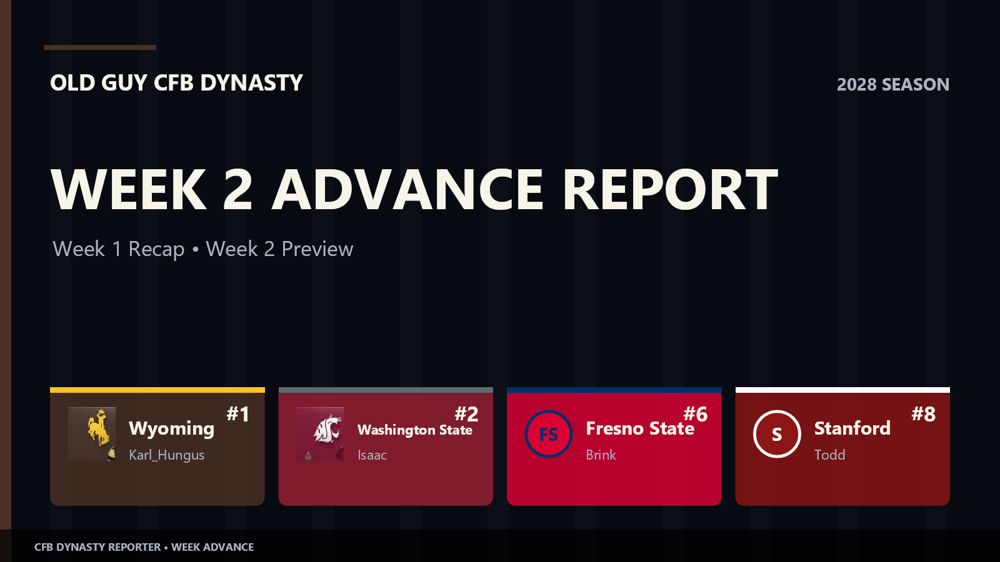

Jackpot cashes in; Wyoming takes the top line
UAB’s 52–17 win at USF leads the Week 1 recap, now with eight documented finals after two user-supplied corrections. The new Media Poll puts Wyoming at No. 1; Stanford–Oregon State and Colorado–Wyoming anchor the Week 2 slate.

Week 2 advance report · Week 1 recap and Week 2 preview.
Week 1 had enough fireworks to keep the scorekeeper busy. Post-publication corrections add Fresno State [Brink] winning 35–28 at Penn State and BYU winning 10–3 at Oregon State [Joe]. UAB [Jackpot] beat USF [Cole] 52–17 in a user showdown, while Wyoming [Karl_Hungus] edged Stanford [Todd] 20–17. The new Week 2 Media Poll has Wyoming at No. 1 and Washington State [Isaac] at No. 2. Those ranks describe the current poll; they do not retroactively rank the Week 1 games.
Week 1 recap: the verified finals
UAB’s 35-point win over USF was the biggest user-against-user score of the captured week. The schools meet again only in the standings, where this result will need explaining for a while.
Wyoming–Stanford was the close one: Wyoming escaped 20–17. Nebraska held off UTEP [Przemysl] 23–21, another finish decided by a field goal or less.
Washington State [Isaac] shut out Virginia Tech 61–0. Charlotte [Kel] beat Arizona 52–34, and UConn [Phil Macrack] won 30–13 at Florida State.
Fresno State [Brink] won 35–28 at Penn State. BYU beat Oregon State [Joe] 10–3 in Corvallis. Both Week 1 results were supplied as manual corrections after the capture missed them.
Week 1 · Captured and corrected user finals
Week 2: a meeting in Corvallis
Stanford [Todd] visits Oregon State [Joe] in the featured user matchup. Todd is No. 8 in the Week 2 Media Poll; the game is scheduled, with no result in this capture.
Wyoming [Karl_Hungus] hosts No. 15 Colorado. No. 2 Washington State [Isaac] hosts Louisville, and No. 6 Fresno State [Brink] hosts Texas A&M. Plenty of room for the poll to look different next issue.
Charlotte [Kel] travels to South Carolina; Arkansas visits UAB [Jackpot]; UNLV [Westy] visits Kansas State; and No. 18 UTEP [Przemysl] goes to Texas State.
Week 2 · Verified scheduled games
Media Poll: Wyoming climbs to No. 1
Wyoming [Karl_Hungus], Washington State [Isaac], Fresno State [Brink], Stanford [Todd] and UTEP [Przemysl] are the verified ranked user schools. Fresno State is No. 6 in the Media Poll and No. 10 in the separate Coaches Poll.
Media Poll · 1–12
Media Poll · 13–25
Individual leaders
National season statistics were captured, but passing, rushing, receiving, tackles and interceptions ranks could not be verified from the sorted tables. This edition omits individual rank claims until a short category recapture or sourced correction confirms them.
Recruiting watch
Wyoming [Karl_Hungus] has the verified No. 1 recruiting class in this capture, with one commit and 20 points.
Rank claims for Texas State and Mississippi State are omitted because their captured rows collided.
Team offense
Fresno State and Washington State pace the captured user-team offensive snapshot.
Team defense
Washington State and Oregon State have the verified yards-allowed figures below.
Turnovers
UAB pairs its Week 1 win with a plus-five turnover differential in the current team snapshot.
Next whistle: Stanford–Oregon State and Colorado–Wyoming headline the verified Week 2 slate. When the missing results and leader tables are recaptured, this edition can be corrected in place.